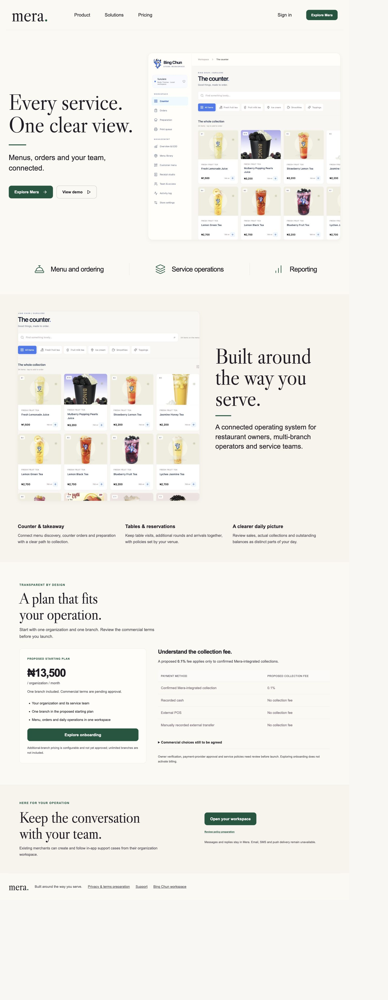
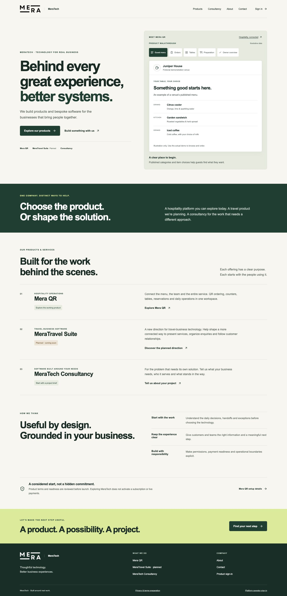

Local baseline captured before redesign.

Hosted revision68d0314, separating QR, planned Travel and Consultancy.

Actual captures from this implementation run, each at1440CSS-pixel desktop width. The earlier capture includes Chrome zoom margins. New direction follows the consolidated company brief; this is not a claim of user approval.


See VISUAL-CHECKPOINT.md for findings, completed interactions and explicit verification limits.